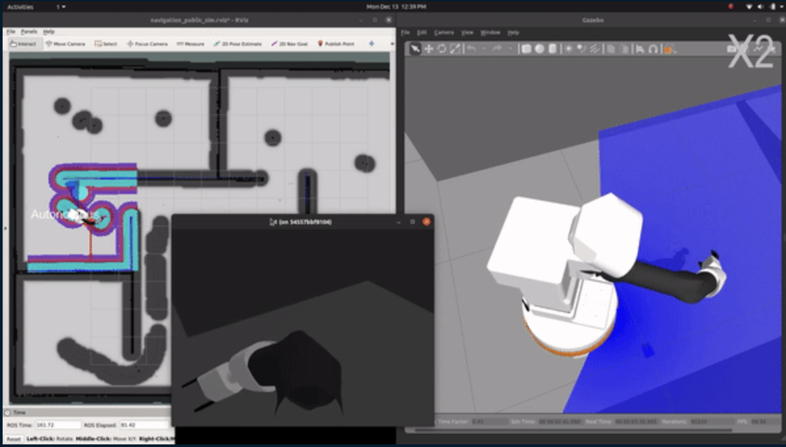

Robotics · Mobile manipulation
Home Organizing Robot
An end-to-end ROS project in which a mobile manipulator searches a simulated home, detects a misplaced object, grasps it, and returns it to the right location.

The task
A blue cube is placed at a random location inside a simulated five-room house. The robot must search for it autonomously, approach it, plan a valid grasp, and carry it to a designated destination.
The system
A state-machine pipeline coordinates several standard robotics components into one complete behavior.
- ROS move_base navigates through the mapped environment.
- OpenCV filtering detects the blue target while the robot searches.
- MoveIt plans the manipulator trajectory used to grasp the object.
- The mobile base returns the grasped object to its desired location.
Engineering focus
This was a team project designed to practice both core ROS concepts and disciplined robotics software development. Alongside the demo, the repository includes automated tests, continuous-integration configuration, generated documentation, planning artifacts, and system diagrams. It also records a practical edge case: manipulation planning becomes unreliable when an object is too close to a wall.